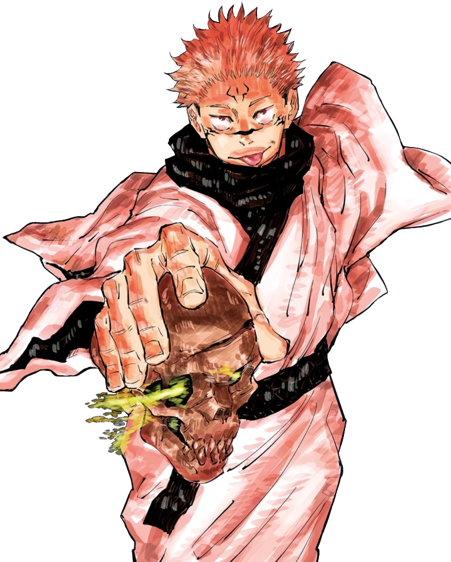

¿Quién es?
Ryomen Sukuna (両面宿儺 Ryōmen Sukuna) simplemente conocido como
Sukuna (宿儺 Sukuna) (lit. Sukuna de la Doble Cara) es el
antagonista principal de la serie manga Jujutsu Kaisen. Es
un espíritu maldito de grado especial y el más peligroso que
existe. Es conocido por muchos como el indiscutible Rey de
las Maldiciones (呪いの王 Noroi no Ō).
De acuerdo a la leyenda, Sukuna fue un demonio con apariencia
humana que existió durante la era dorada del Jujutsu hace
unos 1000 años, los hechiceros al perfeccionar sus
habilidades pudieron derrotarlo. Después de su muerte, no
fueron capaces de destruir su cuerpo y traspasó generaciones
en forma de objetos malditos, representados en un total de
20 dedos. Sin embargo, años más tarde, durante el período
moderno, Yuji Itadori termina en posesión de un dedo y lo
ingiere en un intento de ayudar a las personas de su
alrededor, como resultado, Sukuna logra encarnar en su
cuerpo.
Despues de su victoria contra Gojo Satoru, Sukuna se titula
como el personaje mas poderoso de la obra, cosa admitida por
el mismo Gojo satoru.
Apariencia

Vestimenta de Sukuna
|
Su pasada apariencia lo describe como un demonio de cuatro brazos
y dos rostros. Actualmente, luce como su recipiente (Yuji
Itadori), pero con el cabello hacia arriba en tonos similares al
rosa palo y con una líneas/marcas, en su frente, nariz, mejillas
y cuerpo. También tiene una segundo par de ojos, debajo de los
normales. Sukuna también tiene dos líneas que nacen en la
clavícula y descienden hasta sus caderas, unas rodeando el
cuello y círculos en ambos hombros
Cuando toma posesión del cuerpo de Itadori, generalmente es visto
usando el uniforme del Colegio Técnico de Magia Metropolitana de
Tokio. En el manga, usa una camisa negra de manga larga que se
asemeja a un gakuran sobre una sudadera con capucha roja,
pantalones negros y zapatos rojos, mientras que en el anime, la
camisa y los pantalones son representados en color azul marino.
En otras ocasiones, puede ser visto sin camisa, o comúnmente
usando un kimono claro con borde negro, una bufanda negra y
zapatos negros.
Personalidad

Cara de Sukuna
|
Sukuna posee un espíritu libre que solo guía del placer y dada su
personalidad sádica, le gusta y disfruta inmensamente del
sufrimiento de los demás. Es codicioso y siempre quiere mantener
el control de la situación sin preocuparse por las
consecuencias. Asegura no tener interés alguno en su recipiente,
Yuji Itadori, pero se niega rotundamente que alguien intente
matarlo ya que hacer eso, significa interponerse en sus planes.
Considera inmediatamente aburrido a todo aquel que no cumpla con
sus expectativas en base a fuerza o habilidades físicas.
Constantemente, crítica a su recipiente por lo débil e
incompetente que es con sus habilidades, incluso, llega a
molestarse cuando pierde contra un oponente que él considera que
es más débil que Itadori. Por otro lado, si se encuentra con
alguien fuerte y que sea capaz de entretenerlo lo suficiente,
suele halagar las habilidades de su oponente.
Aunque le gusta matar humanos, especialmente niños débiles y
mujeres llenas de vitalidad, posee un lado astuto que suele usar
a su favor. Por ejemplo, durante su enfrentamiento contra Megumi
Fushiguro, arrancó el corazón de su recipiente para evitar que
éste realice el cambio de cuerpo de manera exitosa.
Sukuna se considera a si mismo por encima de humanos, hechiceros,
maldiciones y usuarios malditos. Su actitud es similar al de un
rey tirano arrogante y, como tal, constantemente trata a los
demás como sus inferiores y les da órdenes dado que se siente en
el derecho de hacerlo. Sukuna posee un aura intimidante e
inspira terror a todo el mundo. Él no duda en intimidar y
amenazar a los que están a su alrededor para que éstos hagan lo
que él les ordene. En Shibuya, apenas despertó y tomó el control
de su cuerpo recipiente, amenazó a Jogo, Mimiko y a Nanako para
que se arrodillaran ante él. También amenazó a todos los humanos
presentes diciendo que si se movían sin su permiso los mataría a
todos sin dudarlo.
Habilidades
| Habilidad |
Descripción |
Imagen |
| Deshacer |
Con el simple movimiento de sus dedos, puede dar lugar a la manifestación de un ataque cortante común. Éste corte es usado para atacar a seres no vivientes. |
|
| Partir |
Es bastante similar a su corte común pero este adapta la energía maldita dependiendo el enemigo. Tiende a ser usado en seres vivientes. |
|
| Expansión Territorial: Relicario Demoníaco |
Da lugar a la creación de un templo budista decorado de calaveras. Es diferente a otros tipos de expansiones territoriales ya que éste no crea una barrera que separe a ambos espacios, sino que provee al enemigo una salida, pero a cambio el espacio del territorio llega a tener un radio de 200 metros, los cuales Sukuna puede manejar como guste. |
|
| Contrato Vinculante: Contrato
con
Partes Beneficiadas |
Es un contrato creado a través del uso de
energía
maldita realizado entre Itadori y Sukuna. El
contrato sigue como condición:
- Cuando Sukuna grite 'Contrato',
Itadori debe entregar su cuerpo por un
minuto.
- Seguido de eso, Itadori debe olvidar las
condiciones del contrato.
- Durante el minuto en que cambien de
cuerpo,
Sukuna no lastimará a nadie.
|
|
Imágenes de Sukuna
|
Apariencia de Sukuna (Anime)
|
|

Apariencia de Sukuna (Manga)
|
|
Sukuna asegura que Choso es más débil que Yuji Itadori.
|
|
Sukuna esquivando el ataque de Mahogara
|
|
Sukuna diciendole patetico a Jogo
|
|
Sukuna felicitando a Jogo
|
Curiosidades
- Según información revelada en el Volumen 02 del manga:
- El diseño de kimono de Sukuna es más cercano a un kimono de mujer dado que, ya que en el pasado tenía 4 brazos, con un kimono femenino se sentía más cómodo.
- Información revelada de la entrevista con Gege Akutami:
- Su pasatiempo y preferencia es comer.
- No le desagrada nada en particular (no le interesa nadie más que él mismo).
- Sus dedos saben a jabón.